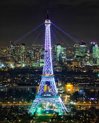

Eiffel Tower
The Eiffel Tower, one of the must sees in Paris, can't be missed from any spot while walking around in the city. It was built by the French engineer Gustave Eiffel which was already famous at the time for building bridges. He spent several years building the Eiffel Tower as a monument for the World Exhibition in 1889.
Notre Dame
On Monday, April 15, 2019, the Notre-Dame Cathedral in Paris was ravaged by a fire. Archbishop Michel Aupetit of Paris: "Our Lady, our dear cathedral, witness of so many major events in our country, was destroyed by a frightful fire after so long resisted the vicissitudes of its history
Louvre Museum
At the top of Paris top 10 attractions, The Louvre Museum (Paris) is in fact the largest art museum in the world and the home for one of the finest art collections anywhere to be seen including two of the most famous painted woman - the Mona Lisa and Venus de Milo just to name two out of the 30,000 exhibits displayed.
Paris, the cosmopolitan capital of France, is one Europe's largest cities, with 2.2 million people living in the dense,
central city and almost 12 million people living in the whole metropolitan area. Located in the north of France on the river Seine,
Paris has the well deserved reputation of being the most beautiful and romantic of all cities, brimming with historic associations and
remaining vastly influential in the realms of culture, art, fashion, food and design. Dubbed the City of Light (la Ville Lumière) and
Capital of Fashion, it is home to the world's finest and most luxurious fashion designers and cosmetics, such as Louis Vuitton, Chanel,
Dior, Yves Saint-Laurent, Guerlain, Lancôme, L'Oréal, Clarins, etc. A large part of the city, including the River Seine, is a UNESCO World
Heritage Site. The city has the second highest number of Michelin restaurants in the world (after Tokyo) and contains numerous iconic landmarks,
such as the world's most visited tourist site the Eiffel Tower, the Arc de Triomphe, the Notre-Dame Cathedral, the Louvre Museum, Moulin Rouge,
and Lido, making it the most popular tourist destination in the world with 45 million tourists annually.
The Holy Chapel (Paris) in French - La Sainte Chapelle, was built by King Louis IX to host the remains of the True Cross, including the original Crown of Thorns which was purchased from the emperor of Constantinople. Today the Holy Chapel Paris is considered among the highest achievements of the Rayonnant period of Gothic architecture and is the only surviving building of the Capetian Royal Palace on the Île de la Cité .
One of the most popular attractions in Paris, Inspired by Rome's Arch of Titus, the Arc de Triomphe is located in Paris in the world’s largest traffic roundabout and is the biggest and tallest triumphal arch in the world - about 49 meters (161 ft.) high and 44 meters (144 ft.) wide. Arc de Triomphe (Paris) is located 2 kilometers northwest from the place de la Concorde in the middle of the well know and extremely busy "Place Charles de Gaulle" (or better known to Parisians as “Place de l’Étoile”).
The spectacular Tuileries Gardens (Paris), Jardin des Tuileries can be found just between the Louvre and the Place de la Concorde. It was designed in 1564 by Catherine de Medicis as a garden for the Tuileries Palace (for Louis XIV). The Tuileries Gardens are probably the most French garden you could find all across Paris, with fine rows of trees and well-formed paths.
Cruise up the majestic Seine and see how Paris famous sites are revealed from a new perspective. This cruise comes for free with the Paris Pass. From the water it is possible to see the bridges and monuments of Paris as you could never hope to from land.
GO BACK
TOP ATTRACTIONS
Sainte Chapelle
The Holy Chapel (Paris) in French - La Sainte Chapelle, was built by King Louis IX to host the remains of the True Cross, including the original Crown of Thorns which was purchased from the emperor of Constantinople. Today the Holy Chapel Paris is considered among the highest achievements of the Rayonnant period of Gothic architecture and is the only surviving building of the Capetian Royal Palace on the Île de la Cité .
Arc de Triomphe
One of the most popular attractions in Paris, Inspired by Rome's Arch of Titus, the Arc de Triomphe is located in Paris in the world’s largest traffic roundabout and is the biggest and tallest triumphal arch in the world - about 49 meters (161 ft.) high and 44 meters (144 ft.) wide. Arc de Triomphe (Paris) is located 2 kilometers northwest from the place de la Concorde in the middle of the well know and extremely busy "Place Charles de Gaulle" (or better known to Parisians as “Place de l’Étoile”).
Tuileries Gardens
The spectacular Tuileries Gardens (Paris), Jardin des Tuileries can be found just between the Louvre and the Place de la Concorde. It was designed in 1564 by Catherine de Medicis as a garden for the Tuileries Palace (for Louis XIV). The Tuileries Gardens are probably the most French garden you could find all across Paris, with fine rows of trees and well-formed paths.
River Cruise
Cruise up the majestic Seine and see how Paris famous sites are revealed from a new perspective. This cruise comes for free with the Paris Pass. From the water it is possible to see the bridges and monuments of Paris as you could never hope to from land.